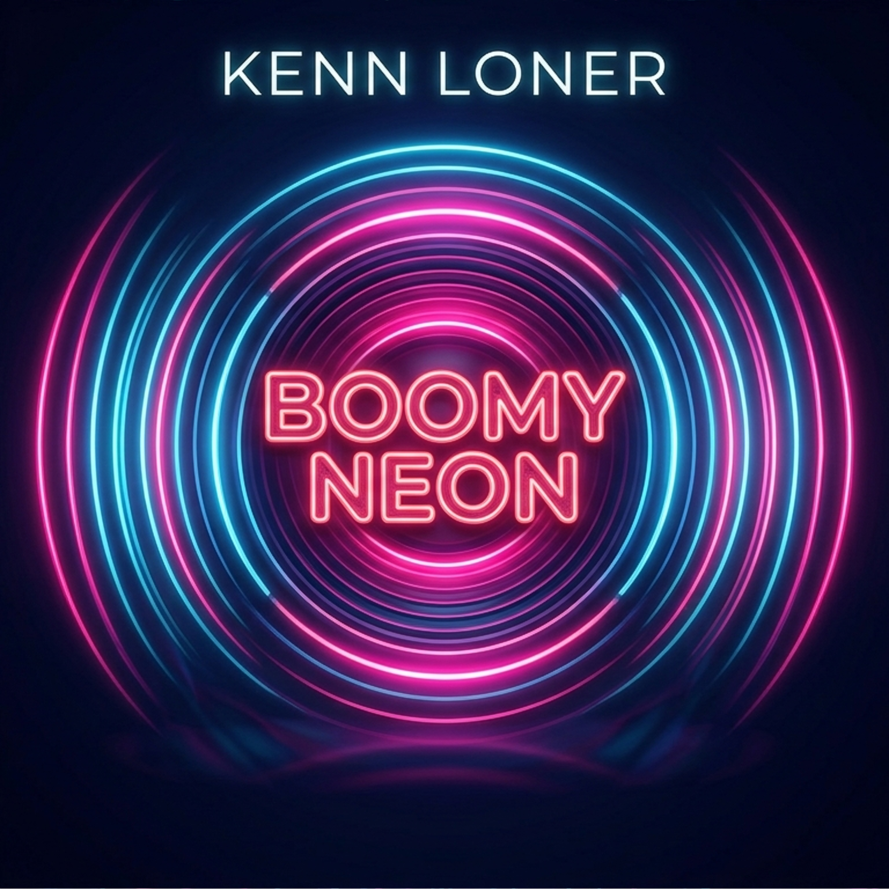

Play on your favorite platform.
Produced, Mixed, and Mastered by: Kenn Loner
Release date: May 29, 2026
"Boomy Neon" is a vibrant Progressive House track that blends driving energy
with lush, atmospheric textures.
This track focuses on a "colorful" and melodic soundscape,
designed to capture the pulse of a futuristic city night.